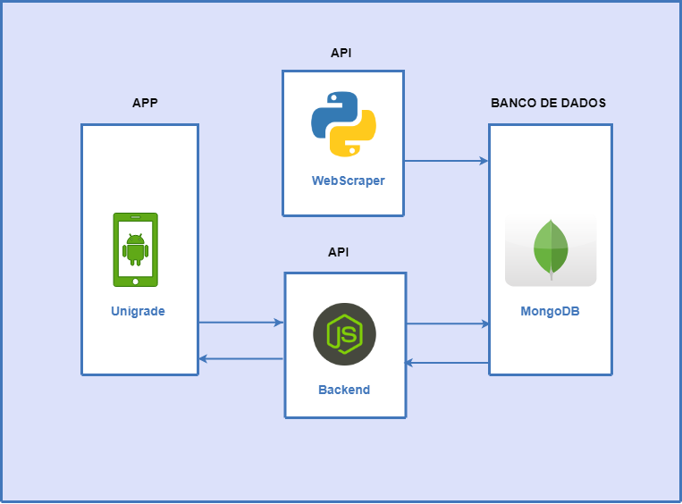

Arquitetura
Histórico de revisões
| Data | Versão | Descrição | Autor(es) |
|---|---|---|---|
| 23/03/2019 | 0.1 | Iniciando o documento | Guilherme Aguiar |
| 24/03/2019 | 0.2 | Adição do tópicos sumário e API | Gabriel Carvalho |
| 24/03/2019 | 0.3 | Adição das referências | Gabriel Carvalho |
| 24/03/2019 | 0.4 | Correção de sumário e adição de visão geral | Geovana Ramos |
| 24/03/2019 | 0.5 | Correção de links | Joberth Rogers |
| 24/03/2019 | 0.6 | Adição do tópico banco de dados | Ezequiel De Oliveira |
| 24/03/2019 | 0.7 | link para tópico relacionado | Ezequiel De Oliveira |
| 26/03/2019 | 0.8 | Arrumando links | Daniel Maike |
Sumário
1. Visão Geral
2. App
3. API
4. Banco de Dados
5. Referências
1. Visão Geral

O sistema será composto pelo aplicativo Android, duas APIs e um banco de dados. O app irá fazer requisições à API Node para recuperar as disciplinas e montar as grades, a qual irá recuperar dados do banco. A API WebScraper irá varrer o matrícula web e salvar os dados no banco de dados MongoDB.
2. App
O aplicativo é onde ocorre a interação do usuário com o sistema. Por conta dos limites de tempo de desenvolvimento o aplicativo será desenvolvido apenas para o sistema operacional Android, entretanto, por causa da modularidade proporcionada pelo uso de APIs, é possível que em projetos futuros a disponibilidade do sistema aumente. É responsabilidade da aplicação exibir para o usuário os conteúdos exposotos pela API Node e permitir a interação para que ele alcance seus objetivos ao utilizar o sistema.
2.1 Tecnologias
A tecnologia escolhida para a criação do aplicativo é o Java, linguagem nativa do sistema operacional Android. Sua escolha é influenciada por ser uma linguagem versátil e com ampla documentação, tanto de suas partes comuns quanto das partes exclusivas do Android. Outro fator que influenciou esta escolha é a familiaridade à linguagem que alguns membros do grupo possuem.
3. API
A API será desenvolvida utilizando os princípios REST (Representational State Transfer), que se comunica por meio do protocolo HTTP (Hypertext Transfer Protocol), onde é possível enviar e receber dados utilizando os métodos GET, POST, PUT e DELETE.

3.1 Tecnologias

Para o desenvolvimento da nossa API, iremos utilizar Node.js e o framework Express.js. Node foi escolhido por ser possível trabalhar com requisições assíncronas, fazendo com que a API ganhe mais performance. Express.js foi escolhido por facilitar o desenvolvimento da API utilizando Node.js.

4. Banco de Dados
4.1 Tecnologias

A tecnologia escolhida para ser integrada na API como banco de dados é o Mongodb sendo um banco de dados NoSql (Not only SQL), Mongodb é um banco de dados não relacional, orientado a documentos, onde guarda os dados em arquivos no formato Json.
O motivo da escolha de tal tecnologia foi pela boa integração com Nodejs/Express
5. Referências
[1] Reunião feita na aula do dia 22/03/2019. [2] Mapa Mental feito na aula [3] Architectural Styles and the Design of Network-based Software Architectures. Fielding, Roy Thomas. [4] REST: Princípios e boas práticas. Ferreira, Rodrigo.